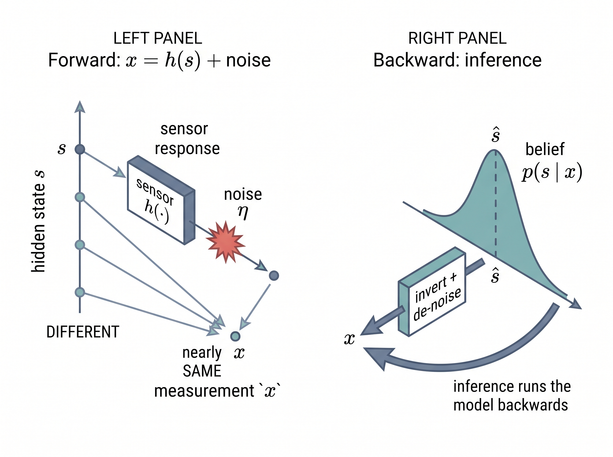

"Give me four honest words, what I measured, what is true, what changed, and what I did about it, and I can run a factory."
A Well-Organized AI Agent
The big picture
Sections 1.1 and 1.2 gave you the intuition: sensors are imperfect windows, and inference on the physical world is different from inference on text. This section makes that intuition precise. Almost every problem in this book decomposes into exactly four quantities. What you measure, what is actually true in the world, what changed, and what you do next. We name them measurement, state, event, and action, we fix the symbols for each, and we write down the one equation that ties measurement to state. Every later chapter inherits this vocabulary, so the half hour you spend here pays off for the next seventy chapters.
A pulse oximeter never measures the oxygen in your blood, a thermometer never touches your core, and a crash sensor never feels the crash. Yet each fires a decision that can save a life. Any of it works because every sensing problem, however exotic, collapses into just four quantities. This section names those four and binds them with a single equation. You need no more than comfort with functions and basic probability. Chapter 4 builds the probability machinery carefully, so treat any density here as a promissory note redeemed there.
Measurement: what the sensor hands you
What it is. A measurement is the number, or vector of numbers, that a transducer (the physical sensing element that converts a physical quantity such as heat or light into an electrical signal) produces. The continuous-time signal off the front end we write \(x(t)\); once sampled we index it as \(x[n]\) within a window, or \(x_k\) at discrete time step \(k\). When we want to distinguish the raw transduced signal from the cleaned, conditioned quantity that an inference model actually consumes, we reserve \(x\) for the raw signal and \(y\) for the observation. Most of the time the difference does not matter and people say "measurement" for both; we make the split explicit only where filtering or feature extraction sits between them.
Why it needs its own name. The whole reason sensory AI is hard is that the measurement is not the thing you care about. A pulse oximeter does not measure oxygen saturation; it measures how much red and infrared light reached a photodiode after passing through a finger. The quantity of interest is hidden, and the measurement is a distorted, noisy shadow of it. That relationship deserves an equation. In short: a sensor never hands you the truth, only a noisy shadow of it, and all of sensory AI is the craft of reading that shadow backwards.
Common Misconception
"The sensor measures the state directly." It is tempting to say a thermometer measures temperature or a pulse oximeter measures oxygen, but every sensor reports only a proxy signal \(x\) tied to the state \(s\) through the response \(h\) and corrupted by noise \(\eta\); collapsing the four quantities into two by treating \(x\) as if it already were \(s\) is exactly the reasoning error that ships miscalibrated systems.
How they connect. Get this relationship wrong and the damage is not abstract: a pulse oximeter that misjudges how light maps to oxygen can report a comfortable number while a patient quietly desaturates, and every alarm and action downstream inherits that lie. The central object of this book is the measurement model
$$ x = h(s) + \eta, $$where \(s\) is the hidden state, \(h(\cdot)\) is the sensor response (the physics and geometry that turn state into a signal), and \(\eta\) (sometimes \(\varepsilon\)) is measurement noise. Read it as a sentence: the world is in some true state \(s\); the sensor applies its response \(h\); noise corrupts the result; you observe \(x\). The map \(h\) is rarely the identity and rarely linear. It can saturate, it can be direction dependent, it can drift with temperature. We assume the noise is additive and Gaussian only where we say so explicitly; in general \(\eta\) is whatever the physics dictates, and pretending otherwise is a classic way to ship a miscalibrated system. Where \(h\) comes from, and how to characterize it per sensor, is the entire subject of Chapter 2.
Key insight
Inference is running the measurement model backwards. You have \(x\); you want \(s\); the arrow \(h\) points the wrong way and noise blurs it. Because \(h\) can be many-to-one and \(\eta\) is random, you can almost never recover \(s\) exactly. The honest output is not a single value but a belief, a probability density \(p(s \mid x)\), and any single number you report is an estimate \(\hat{s}\) drawn from that belief. Whenever you see a hat in this book, read "our best guess of," not "the truth."
Mental Model
Think of guessing a word from a smudged, handwritten sticky note. The writer had one word in mind (the state \(s\)); their handwriting and the smudge (the response \(h\) plus noise \(\eta\)) turned that word into the marks you actually see (the measurement \(x\)). Many different words could have produced the same smudge, so you cannot invert the marks to a single certain answer; the best you can do is narrow them to a shortlist and rank the candidates by how plausible each one is. That ranked shortlist is exactly the belief \(p(s \mid x)\), and reading the note "backwards" from ink to intended word is inference. Figure 1.3.1 illustrates the measurement model and its inversion: forward map x = h(s) + noise versus backward inference to a belief p(s|x).

State: what is actually true
The measurement model puts the hidden \(s\) on its right-hand side, so having named the signal the sensor hands you is only half the job; now we name the thing that signal is a shadow of.
What it is. The state \(s\) (or \(s_t\) as it evolves in time) is the quantity you actually care about, the thing you would measure directly if the universe were kind enough to let you. State comes in three flavors. It can be continuous (core body temperature, the three-axis orientation of a drone, blood glucose), discrete (a valve is open or shut, a machine is in one of five operating modes, a sleeper is awake or in rapid eye movement (REM) sleep), or hybrid, mixing both (a robot's continuous pose together with a discrete "which room am I in" label).
Why the distinction earns its keep. State type largely dictates the downstream toolkit. Continuous state points you at estimators and filters; discrete state, at classifiers and detectors; hybrid state needs both stitched together. Naming the type early is the fastest way to pick the right method, and to avoid forcing a categorical problem into a regression that reports "3.7 rooms."
Fix the state type first: continuous, discrete, or hybrid decides your method family before you write a line of code.
When state changes over time. Physical state has memory. Temperature now is close to temperature a second ago; a machine that was healthy last minute is probably still healthy. That temporal structure, captured by writing \(s_t\) and modeling how \(s_t\) begets \(s_{t+1}\), is exactly what recursive estimators exploit, and it is the backbone of Chapter 9.
In practice: a continuous glucose monitor (CGM) patch on the arm
The CGM is the four quantities in one small device. The state \(s_t\) is interstitial glucose concentration, continuous and slowly varying. The measurement \(x_k\) is an electrical current from a glucose-oxidase electrode, sampled every few minutes; the sensor response \(h\) is roughly proportional but drifts over the sensor's ten-day life, and \(\eta\) grows when the wearer lies on the patch. An event \(e\) fires when the estimated trajectory \(\hat{s}_t\) crosses a hypoglycemia (dangerously low blood glucose) threshold on a falling trend. The action \(a\) is a phone alarm telling the wearer to eat. Nearly every design decision, calibration schedule, alarm threshold, alarm timing, lands squarely on one of the four.
Step-Through: one turn of the perceive-act loop
Trace the four quantities through three time steps with a linear sensor \(h(s) = 2s + 1\), additive noise \(\eta\), and an alarm boundary at \(s = 5\). At each step we read the world, invert the sensor to an estimate, test the boundary, then choose an action.
- t = 1. True state \(s = 3.0\). Sensor output \(x = 2(3.0) + 1 + \eta\), with \(\eta = +0.2\), so \(x = 7.2\). Invert: \(\hat{s} = (7.2 - 1)/2 = 3.10\). Estimate below 5, so no event, and the action \(a\) is do nothing.
- t = 2. State has drifted to \(s = 4.5\). Now \(x = 2(4.5) + 1 + \eta\) with \(\eta = -0.4\), so \(x = 9.6\), giving \(\hat{s} = (9.6 - 1)/2 = 4.30\). Still under the boundary; still no event.
- t = 3. State crosses to \(s = 5.2\). With \(\eta = -0.1\), \(x = 2(5.2) + 1 - 0.1 = 11.3\), so \(\hat{s} = (11.3 - 1)/2 = 5.15\). Now \(\hat{s} > 5\): the event \(e\) fires and the action \(a\) is raise the alarm.
Notice the noise doing its quiet damage: the true state at t = 3 is 5.2 but the estimate lands at 5.15. That gap is harmless here, yet had the noise been \(\eta = -0.5\) the estimate would have read 4.95 and the crossing would have gone undeclared. That single averted-or-missed declaration is the missed-event risk in one number.
Event: what changed
Tracking a state moment by moment answers "what is true now," but many decisions hinge instead on the instant that truth changes, and that instant is a quantity in its own right.
What it is. An event \(e\) is a discrete, labeled occurrence in time, most often a transition in the state. A footstep, a heartbeat, a valve opening, a bearing beginning to fail, a driver's hand leaving the wheel: each is a point (or a short interval) on the timeline that you want to mark and count. Where state is something you track continuously, an event is something you either declare or you do not.
Why it is not just "state, again." Two reasons. First, downstream consumers often want the event, not the trajectory: a maintenance team wants "bearing wear crossed the alarm line at 14:07," not ten thousand vibration samples. Second, events are where the value and the liability concentrate. A missed event (you failed to declare a real one) and a false event (you declared one that did not happen) have very different costs, and tuning that trade is a design act in itself. Detecting events as changes in a signal's statistics is the province of Chapter 12.
How to think about it. Formally, an event is a function of the state history: \(e\) fires when \(s_t\) crosses a boundary, enters a region, or changes regime (shifts from one qualitative mode of behavior to another). That framing keeps events anchored to the physical world rather than to accidents of the raw signal, which matters because you want to detect the bearing failing, not the one noisy sample that happened to spike.
The right tool: change detection in three lines
Teaching change detection from scratch (deriving a cumulative sum (CUSUM) statistic, choosing a threshold, proving its false-alarm rate) takes a full section, which Chapter 12 gives it. When you just need change points on a signal, a maintained library collapses roughly forty lines of hand-rolled statistic-plus-threshold code into three:
import ruptures as rpt # x_k is your 1-D measurement array
algo = rpt.Pelt(model="rbf").fit(x)
events = algo.predict(pen=10) # indices k where the regime changes -> your eruptures library. The Pelt search and the "rbf" cost function together handle the dynamic-programming search over change points and the segment-cost model that you would otherwise implement and validate by hand. You supply only the penalty pen, which trades missed events against false ones.Action, the perceive-act loop, and one notation to rule them all
Declaring that something changed is inert until the system does something about it, and that final quantity is what turns a stream of events into behavior.
What it is. An action \(a\) is what the system does with its inference: raise an alarm, brake the car, adjust a setpoint, log a row, or do nothing (a legitimate action). Action is what makes sensing purposeful. A perception stack that never influences a decision is a data logger; the loop from measurement to action is what turns it into a system.
Precisely. An action is the output of a decision rule, a policy that maps your belief \(p(s \mid x)\) (or its point estimate \(\hat{s}\)) to a choice from a fixed set of options. It matters because the objective you truly care about, safety, cost, or comfort, is defined at the action and not at the estimate, so a perception module with tiny error can still drive a costly decision. The mechanism is to score each candidate option by its expected cost under the belief and pick the cheapest, which is why you reach for a full decision-theoretic policy whenever the penalties for different mistakes are lopsided (a missed cardiac alarm versus a nuisance beep) and settle for a bare threshold on \(\hat{s}\) only when those penalties are roughly symmetric.
Checkpoint
So far: measurement, state, and event name what you sense, what is actually true, and what changed; the action is the decision a policy makes from your belief, chosen to minimize expected cost rather than estimation error.
Why it closes the loop. Actions change the world, which changes the state, which changes future measurements. The four quantities therefore form a cycle, not a pipeline. Figure 1 shows the full turn: state produces a measurement through \(h\); inference recovers a belief and an estimate \(\hat{s}\); the estimate declares events; a policy chooses an action; the action perturbs the state; the cycle repeats. Keeping this loop in mind stops you from optimizing perception in isolation when the real objective lives at the action.
Real-World Application: jet engine health monitoring
Rolls-Royce's engine health monitoring typically streams vibration, temperature, and pressure measurements \(x\) from hundreds of sensors on each in-service engine to ground stations. Inference estimates the hidden state \(s\) (component wear and blade health) from those signals, a detector declares an event \(e\) when a degradation trend crosses a maintenance boundary, and the action \(a\) is scheduling a part swap before failure rather than after. The same four quantities run continuously across an entire fleet.
One notation, fixed here. The symbols above are the book's contract, summarized in Table 1. Learn them once. Two extras round out the set: a learned representation or embedding is \(z\) (it appears the moment neural encoders enter, in Chapter 13), and a probability density is \(p(\cdot)\), with a hat marking any estimate.
| Symbol | Meaning | Type / index |
|---|---|---|
| \(x(t),\ x[n],\ x_k\) | Raw transduced signal | continuous time \(t\); sample index \(n\); step \(k\) |
| \(y,\ y_t\) | Conditioned observation a model consumes | used when raw vs. clean matters |
| \(s,\ s_t\) | Hidden world state | continuous, discrete, or hybrid |
| \(h(\cdot),\ \eta\) | Sensor response; measurement noise | \(x = h(s) + \eta\) |
| \(e\) | Event: discrete transition or labeled occurrence | a point/interval in time |
| \(a\) | Action taken on the inference | closes the loop |
| \(z\) | Learned representation / embedding | continuous vector |
| \(\hat{\cdot},\ p(\cdot)\) | An estimate; a probability density | e.g. \(\hat{s}\), \(p(s \mid x)\) |
Table 1. The fixed notation for the book. Every later chapter inherits these symbols.
A note on borrowed letters
There is exactly one place where these symbols get politely mugged. The Kalman filter and its Bayesian-filtering relatives grew up in control engineering, where by long tradition the state is called \(x\) and the measurement is called \(z\), the precise opposite of the roles those letters play here. Rather than fight a sixty-year-old convention, Chapter 9 adopts the control notation and flags the remap at its first use, so no symbol ever collides silently. Forewarned is forearmed.
Exercise
Pick a device you own that senses the world (a smartwatch, a thermostat, a car with lane-keeping). Write down its four quantities explicitly:
- What hidden state \(s\) does it actually care about, and is that state continuous, discrete, or hybrid?
- What raw measurement \(x\) does its sensor produce, and can you sketch, even qualitatively, what \(h\) and \(\eta\) look like?
- Name one event \(e\) it declares, and one action \(a\) it takes on that event.
Hint
Start from the action and work backwards. The action is usually the most visible of the four, and it tells you which event triggered it, which tells you which state boundary was crossed, which tells you what the device was really estimating all along.
Self-check
- In \(x = h(s) + \eta\), which term is what you observe, which is what you want, and which is why you cannot have it exactly?
- Why is a hat, as in \(\hat{s}\), never the same claim as the truth \(s\)? What richer object does \(\hat{s}\) summarize?
- Give one reason a maintenance engineer might prefer an event \(e\) over the full state trajectory \(s_t\), and one reason the trajectory is still worth keeping.
Research Frontier
This section draws a clean split: continuous state to filters, discrete state to classifiers, events to detectors. Time-series and sensor foundation models are starting to blur that line by learning one general representation \(z\) that serves many task families at once. MOMENT (Goswami et al., ICML 2024), pre-trained on a large "Time-series Pile," and Google's wearable foundation model, "Scaling Wearable Foundation Models" (Narayanswamy et al., 2024), both show a single pre-trained encoder transferring across forecasting, classification, and anomaly detection with little task-specific data. The hint for sensory AI is that the state, event, and action toolkits may increasingly share one backbone rather than three separate ones.
Try It: find the four quantities in a noisy signal
In about thirty lines of Python you can build a toy version of the whole loop and watch each quantity appear. Install the standard stack first: pip install numpy scipy ruptures matplotlib.
- Manufacture the hidden state: build a time axis with
t = np.linspace(0, 20, 2000)and a slow signals = np.sin(0.5*t), then add a step change at the midpoint withs[1000:] += 2.0to simulate a regime shift. - Form the measurement \(x = h(s) + \eta\): apply a nonlinear response with
x = np.tanh(0.7*s)and add noise viax += np.random.normal(0, 0.15, size=x.shape). Plotsandxtogether and note howhand \(\eta\) hide the state. - Recover an estimate \(\hat{s}\): smooth the measurement with
from scipy.signal import savgol_filter; s_hat = savgol_filter(x, 51, 3), and overlay it to see how much the noise still blurs the recovery. - Declare an event \(e\): run
import ruptures as rpt; cp = rpt.Pelt(model="rbf").fit(x).predict(pen=10)and compare the returned change-point index against the step you injected at sample 1000. - Choose an action \(a\): write an
iftest that prints "ALARM" whens_hatcrosses a threshold (say 0.5) while its local slope is positive, and observe that where you set that threshold changes how early the alarm fires.
Change the noise level and the penalty pen, then watch how the detected event moves. That single knob is the missed-versus-false trade in miniature.
Lab: recover a hidden state from a noisy sensor with a Kalman filter
Goal. Watch the estimate \(\hat{s}\) chase a true state \(s\) you control, and feel directly how measurement noise and process noise reshape the belief \(p(s \mid x)\). Budget 15 to 30 minutes.
Tools. Python with filterpy, numpy, and matplotlib (pip install filterpy numpy matplotlib). The filterpy.kalman.KalmanFilter class gives you a working recursive estimator in a dozen lines.
Steps. Generate a true 1-D state that moves slowly, for example a constant-velocity track s = 0.05 * np.arange(200) or a gentle sine. Corrupt it into measurements \(x = s + \eta\) with x = s + np.random.normal(0, R_true, size=s.shape). Configure a KalmanFilter with a constant-velocity transition matrix, set its measurement variance kf.R and process variance kf.Q, then loop kf.predict(); kf.update(x_k) over the samples and collect \(\hat{s}\) and the posterior variance from kf.P. Plot s, x, and \(\hat{s}\) together, and shade \(\hat{s} \pm \sqrt{P}\).
What to vary. Sweep the filter's R across two orders of magnitude, then do the same for Q. Optionally mismatch the filter's R from the true noise level you injected.
What to observe. As R grows the filter trusts its own model, so \(\hat{s}\) smooths out but lags real turns; as Q grows it trusts each new measurement, so \(\hat{s}\) gets jittery but responsive. The shaded band is the belief itself: it fattens when the sensor is deemed noisy and narrows when the filter is confident. You are watching \(p(s \mid x)\) breathe.
What's Next
In Section 1.4, we use this four-part vocabulary to organize the zoo of real sensors, laying out a taxonomy of modalities (inertial, optical, acoustic, biopotential, radar, and more) and the task families (regression, detection, tracking, forecasting) that map onto state, event, and action. With the four quantities and their notation fixed, you will be able to place any new sensing problem on that map at a glance.